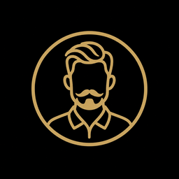
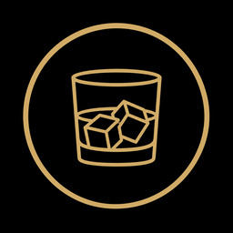
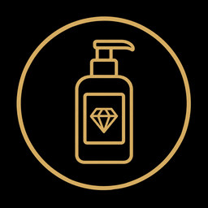
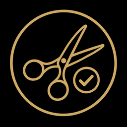

Nossos valores
| 01 | 02 | 03 |
|---|---|---|
| PRECISÃO | EXCLUSIVIDADE | EXCELÊNCIA |
| Cada corte é executado com atenção aos detalhes, respeitando seu estilo e valorizando cada traço. | Um atendimento pensado para você, com cuidado personalizado em cada etapa da experiência. | Profissionais qualificados, técnicas apuradas e produtos selecionados para entregar um resultado de alto padrão. |
O que nos torna únicos

ATENDIMENTO PERSONALIZADO
BEBIDA DE CORTESIA- AMBIENTE CLIMATIZADO

PRODUTOS PREMIUM
PROFISSIONAIS ESPECIALIZADOS EXPERIÊNCIA EXCLUSIVA
EXPERIÊNCIA EXCLUSIVA